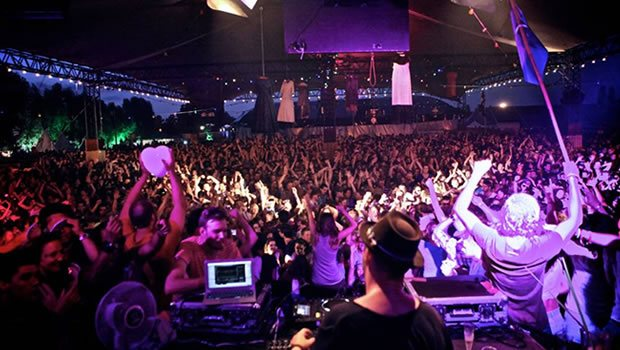

Kölsch’s melodic mission: “As producers, we shouldn’t discard the most important tool we have”

When Data Transmission spoke with Gui Boratto earlier this year, the Brazilian veteran spoke of the new “movement” in underground house, which has seen melody return with a vigor. “I thank god that I’m able to start listening to this kind of music again… It’s great when you see lots of different producers starting to think in the same way, without necessarily speaking with each other. Then you have a little movement. It’s very exciting, and it makes a lot of sense.”
Well, he might as well have been referring directly to his Kompakt Records labelmate Kölsch. He’s the Danish luminary behind the smash ‘1977’ album on Kompakt last year, and its accompanying posse of euphoric dancefloor anthems like ‘Goldfisch’ and ‘Der Alte’. He’s also the studio force behind remixes like his rather evocative 10-minute rework of Coldplay’s ‘A Sky Full Of Stars’; and now, a rather spectacular ‘Balance Presents Kölsch’ mix that he’s added to the fray.
“I think melody is important,” Kölsch told Data Transmission. “As instrumentalists within electronic music, it’s all that we have really; in my opinion at least. And I think it’s super important that if we’re limiting ourselves to a computer and a couple of plugins, that we shouldn’t discard the most important tool that we have… which are the melodies.”
Kölsch began 2014 in impressive fashion when he was selected by Pete Tong to mix his ‘Future Favourite’ edition of the ‘Essential Mix’. So it’s fitting that he’s bringing his year to an end with the superb ‘Balance Presents Kölsch’ mix; which sees him delivering what’s arguably one of the richest, and most diverse, cohesive and gorgeous compilations of the year.
For those who are enamored with the sound of Kölsch, what they might not realise is how much of a history he already has behind him in dance music. The discography of Rune Reilly Kölsch stretches back nearly 20 years, under a variety of aliases; whether it was crossover smash hits like the eternal ‘Calabria’ as Rune RK, or more serious dancelfoor fare under his Ink & Needle alias. Not to mention his work as a producer for some of the world’s biggest pop artists. The launch of his Kolsch alias in 2009 was an attempt to bring these different identities together.
When Data Transmission caught up with him recently to chat about his new ‘Balance Presents Kölsch’ mix, we began by chatting about is recent massive warehouse gig during the Amsterdam Dance Event (ADE), where he played alongside Boratto to much fanfare.
The Amsterdam show was a good chance to see how far you’ve come with your Kölsch alias over the past year.
Definitely, and it’s been quite the journey. And it’s also been exciting how I’ve been able to develop the live show, and make it more interesting. I’m now working on the demos for the next album, which I’m chuffed to be able to insert in there, so I’d say at least around 40 percent of what was in that Amsterdam live show was just new material. I just love the fact that you can do that.
How long has the live show in development for?
It’s constantly changing, and that is what’s so interesting about it. On a weekly basis, I’m trying to do something new with it. Though I’ve gotta say, I’ve stepped back from working on the live show recently, as I’m working on all his new studio material, and I want to make it even better in time for the New Year. And it doesn’t really make sense to keep on playing demos if they’re still being finished off. So at the moment I’m more often playing DJ sets, to allow me to focus on making the new album. But the live show has been developing every week, and I find it interesting to keep it as an organic thing that keeps changing; whereas I think a lot of live shows are very much set in the same structure. The biggest challenge within that is the fact that you’re limited to a small amount of your own records, while if you’re playing a DJ set, you can do whatever you want.
What is tour vision for the next album at this stage?
I used to overthink albums a lot when I was younger, but at this stage I’m just trying to finish off a bunch of really good tracks that I’m enjoying, and then to put them out. I’m finishing off some stuff with Gregor Schwellenbach, the guy who played the strings and piano on ‘Cassiopeia’, and I’m trying to make it a bit more organic sounding. Generally it might sound a bit… I’m not going to say ‘softer’, but a bit different than the last album. Which is good, because it has to change.
And it actually has a different reference spectrum. It’s all about defining moments of my life, and where I’ve realised that we all have these epiphanies during our childhood, and during our lives, that change the way that we see things. This album is very much focused on these moments. And funnily enough, a lot of these moments I had when I was travelling with my parents in the summertime. A lot of things dawned on me during that period. It’s another introspective album, like the first one was too, but obviously it’s gonna be different as I’m evolving as well.
A defining aspect of Kolsch is the big melodies. While the deeper elements are there, you’re not afraid to have a bit of drama as well. However, there’s been a lot of underground house and techno that has shied away from that for a long, long time.
I think there’s two elements to that. One, it would have to be because a lot of people were exploring the boundaries of electronic music, and the fact that it doesn’t have to be a scaled melody, and it doesn’t have to be musical in the same sense that it does with rock or pop music in general. Which is great, I think that’s super interesting. But at the same time, a lot of people were scared away from melody, where it sort of became uncool to use melodies, in the sense that people were kind of afraid of it. And I never really understood that. For a long time, it was as if the less that was going on in the track, the better it was. For me that felt like insecurity channeled through music. For me it was a very depressing period of time.
Do you feel that there’s a little more scope now, to be playing around with those tones and feelings?
From the very beginning of being involved in house and techno music, that was how it actually was. From early Detroit techno and early house music, the melodies and the grooves were sort of always together. Even vocals and stuff were never really forbidden in the way that they were for a certain period of time. So for me it was never really a problem. I’m not necessarily the guy who’s on the frontline of what’s hip right now. I simply don’t give a shit about what people think, honestly [laughs].
There are certainly a lot of conversations about authenticity in underground music. Do you think about this at all, when you’re taking on a Coldplay remix for instance?
[Pauses for second]. I try not to think about it. I mean, I know it’s there, and I totally respect that people need to have an opinion. But honestly, that’s not my job. If I was to worry about what people thought, then I couldn’t make any music. And I think as an artist, that’s our most important role in the world, just to let our creativity be free and do what we do, and then let other people worry about what it should be. People are entitled to their opinions, and I think that’s absolutely cool. I tend to have broad tastes, and that’s just how I am.
You have such a rich background as a producer behind you already. When did you decide that you wanted to push a particular musical identity under the Kölsch alias?
It sorta just happened, to be honest with you. The thing is, I’ve produced a lot of big pop records over the years, and I really enjoyed the challenge of that, in the sense that the 3-minute radio record is very, very difficult to make, there’s no question about it. It’s probably one of the hardest crafts you can do, and people have a tendency to forget how difficult it is to do that, to make an effective pop song, and it’s something that for a long time I found very fulfilling and interesting. At a certain point though, I decided that I needed some more creativity in my life. 3-minutes can also be limiting. It’s like putting a painting in the corner of a gallery, and cutting off half of it because it doesn’t fit into the corner. As an artist you need room to just experiment and do something that’s a little left of center, if you will. I decided that I needed that. So when I started Kölsch in 2009, it was the perfect opportunity for me to just let go and be free, to just experiment and do something nuts. And I haven’t looked back since then. For me, being able to combine both, the underground elements and the accessible elements, that’s kind of what I wanted all the way through. It’s so liberating to be able to not worry about the radio, to not think about these things anymore; and just think, what do I feel like today? What do I want to do? If I want to do a ten-minute remix of Coldplay, that’s what I’ll do and that’s the way it’s going to be.

What were your expectations for the Kölsch alias, when you’ve already had so much success throughout your career?
You know what, that was never the point. So that’s what was so interesting about it. Since I wrote all those big records back in the day, financially I’ve been all right, there’s not been a big problem with that. So I just did it out of pure emotion, and of wanting to be an artist and to do something different for myself. I never thought it would get this far, no question about that.
You’re finishing up the year with your own ‘Balance Presents Kölsch’ mix. The ‘Presents’ format is a little bit different from the typical double-disc format of the ‘Balance’ series.
The original plan that we had discussed for a while was that we wanted to do a double disc, where one would feature my remixes that I’d put out over the years. But we decided to stick to one disc, as it would be in my opinion a more powerful release. I like the fact that you get served something where, that is that; too many options for me are confusing. The idea with the mix was to illustrate what I love in house and techno music. There are a lot of classics on it; there is a lot of melody, a lot of vocals, and a lot of really deep, weirdo stuff on it as well. I think it’s really important to have that wide array of stuff on a mix. Compilations can often tend to be a bit boring and redundant in my opinion, so it was important for me that there was a lot of stuff going on.
It does have some real epic stuff in there, but there’s some deeper elements interwoven in there as well. And these different elements play together really well.
You know what, it used to be that way. Especially in the late 90s and early 2000s, that’s what techno was. It was just pure energy, smile on your face, let’s go absolutely nuts for a couple of hours. And somehow this suave, coolness crept in and corrupted it a bit. But it’s back now so I’m happy [laughs].
You’ve been in the industry for a long time. What are your thoughts on the chasm between mainstream and the underground, as someone who’s straddled both worlds?
I think it’s an interesting time, but at the same time it’s hard for me to relate to; because a lot of the commercial music coming out now is simply not at all what I like. In that sense, and as an emotional guy, it’s difficult to actually relate to. I completely understand that EDM is what the kids want, and I have a lot of respect for people who do that, because it’s hard work. And it’s the same with the events themselves. They’re making history there, and you have to respect that. But it’s just not my thing.
Do you see yourself as being able to bridge that gap at all?
I don’t know. It seems in the scene in the moment, there’s this space between EDM, in terms of that Dutch-sounding stuff that’s huge in the US. Then there is the underground. And then there is some room in-between there. I don’t know what will come to fill that, but it will be interesting to see how it develops. I don’t know if I could ever bridge that gap. It’s not an ambition of mine; but if it happens, it happens.
Balance presents Kolsch is out Now! Click Here to get your copy!